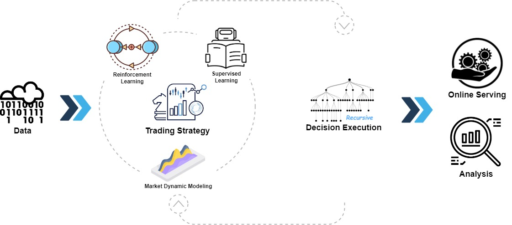
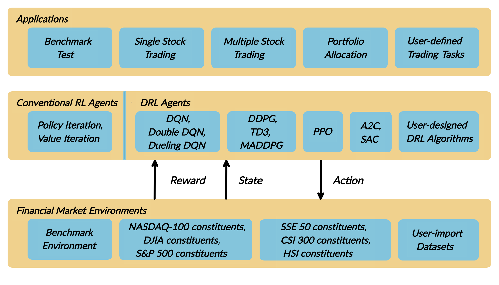

1. The Rise of Open-Source Financial AI
Until recently, institutional-grade quantitative infrastructure—capable of processing petabytes of market microstructure data, calculating non-linear alpha factors, and training multi-agent reinforcement learning models—required tens of millions of dollars in proprietary software development. Proprietary platforms like Bloomberg, FactSet, and proprietary hedge fund engines dominated the landscape.
In 2026, the paradigm has shifted dramatically. Open-source machine learning frameworks developed by tech giants and academic consortiums—most notably Microsoft Qlib and the AI4Finance Foundation's FinRL—have democratized institutional quantitative research. Today, individual researchers and boutique asset managers can build, backtest, and deploy sophisticated AI trading strategies using transparent, peer-reviewed codebases.
2. Microsoft Qlib: Architecture & Data Acceleration
Microsoft Qlib is an AI-oriented quantitative investment platform developed by Microsoft Research. Designed specifically for asset management, Qlib encompasses the entire quantitative research workflow: data processing, alpha factor mining, machine learning model training, and portfolio backtesting.

Qlib's modular design separates data preprocessing from model estimation, allowing quants to benchmark modern machine learning models seamlessly, including:
- Gradient Boosting Decision Trees (GBDT): LightGBM, XGBoost, and CatBoost with built-in temporal splits.
- Deep Neural Networks: LSTM, GRU, Temporal Convolutional Networks (TCN), and Transformer-based models (such as Transformer-Encoders with Self-Attention).
- Factor Mining Engines: Automated genetic programming and reinforcement learning for mathematical alpha discovery.
3. FinRL: Deep Reinforcement Learning for Trading
While Microsoft Qlib excels at supervised learning and factor modeling, FinRL (developed by the AI4Finance Foundation and Columbia University researchers) is the premier open-source library for Deep Reinforcement Learning (DRL) in financial markets.
Financial markets are dynamic and stochastic; an action taken by a trader alters portfolio cash, margin, and exposure. FinRL models trading as a Markov Decision Process (MDP), allowing autonomous agents to learn optimal trading policies through continuous trial, error, and reward maximization.

FinRL supports state-of-the-art DRL algorithms designed specifically for asset allocation and order routing:
- Proximal Policy Optimization (PPO): Robust on-policy actor-critic algorithm favored for stable continuous action spaces.
- Deep Deterministic Policy Gradient (DDPG): Well-suited for fractional portfolio weight allocation.
- Advantage Actor-Critic (A2C): High-throughput parallel training across multi-market regimes.
- Soft Actor-Critic (SAC): Maximum-entropy reinforcement learning that balances reward maximization with exploration diversity.
4. End-to-End Implementation Workflow
Below is a production-grade Python workflow demonstrating how to initialize Microsoft Qlib, load financial data, and train a quantitative prediction model:
5. Qlib vs. FinRL: Feature Comparison Matrix
Choosing between Qlib and FinRL depends on your strategy's operational horizon and mathematical paradigm:
| Feature / Dimension | Microsoft Qlib | AI4Finance FinRL |
|---|---|---|
| Core Paradigm | Supervised Learning & Factor Mining (GBDT, Transformer) | Deep Reinforcement Learning (PPO, DDPG, SAC) |
| Data Query Speed | Ultra-Fast (C-optimized Binary Expression Engine) | Standard (OpenAI Gym / Gymnasium Environment) |
| Best Applied For | Multi-Factor Stock Selection & Cross-Sectional Ranking | Dynamic Portfolio Allocation & Optimal Order Execution |
| Backtesting Realism | Order Execution Simulation with Slippage Models | Step-by-Step Environment Interaction with Transaction Costs |
| License | MIT Open-Source | MIT Open-Source |
6. Mitigating Alpha Decay & Overfitting
When applying open-source financial AI, researchers often encounter alpha decay (the rapid loss of predictive edge once a pattern becomes widely traded) and data snooping bias. To protect your quantitative models in 2026, follow these mathematical safeguards:
- Combinatorial Purged Cross-Validation (CPCV): Avoid standard k-fold splitting; purge overlap periods to eliminate forward look-ahead leakage.
- Deflated Sharpe Ratio (DSR) Auditing: Penalize strategy performance based on the total number of trial models tested before reaching a winning configuration.
- Ensemble Architecture: Combine Qlib's cross-sectional factor rankings with FinRL's policy agents for multi-regime risk budgeting.
7. Institutional Best Practices for 2026
Open-source tools like Microsoft Qlib and FinRL have dismantled the technological barrier to entry for quantitative finance. However, code alone does not guarantee profitable trading. Sustainable algorithmic edge in 2026 requires:
- High-Quality Clean Data Feeds: Garbage data in produces overfitted models out. Ensure your corporate action adjustments (dividends, splits, survivorship bias) are rigorously verified.
- Conservative Slippage Assumptions: Always incorporate realistic broker commission structures, bid-ask spreads, and liquidity constraints.
- Continuous Paper-Trading Validation: Never deploy live capital without a minimum of 60 days of real-time paper execution to verify zero discrepancy between simulated and live performance.